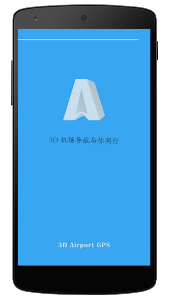
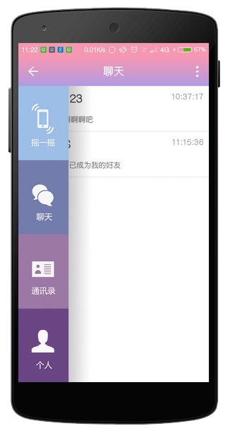
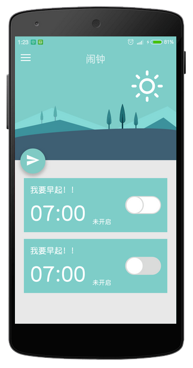
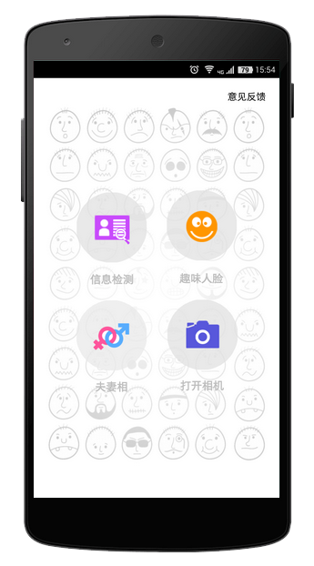
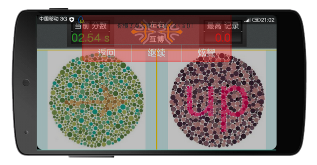

| 作者：邱忠武 王震 李艳 李常丽 | |
| 作品简介： | 与微信这类熟人社交软件不同，LinkMe最基本的要求是建立人与人之间的关系。
其需包含基本的社交应用元素，并通过具有趣味的游戏促进人与人之间的社交关系。 主要社交场景简述如下：用户首先注册个人信息，然后通过摇一摇功能找到附近的陌生人。 找到陌生人后需要完成一个趣味小游戏完成解锁，然后才能看到该陌生人的信息。 接着就可以与该陌生人进行语音沟通、图片分享等社交活动。 |
| 获得奖项： | 第四届中国软件杯大学生软件设计大赛优秀奖 |
Link me
气体污染扩散模拟及其可视化
| 作者：蔡恒毅 李丽莎 孙恒哲 | |
| 作品简介： | 根据现有的气体扩散模型（主要是高斯烟羽扩散模型， Slab重气扩散模型，Screen3扩散模型）， 对污染扩散的浓度，范围做准确的模拟，对扩散情况、 受影响的区域信息做出了详尽的统计分析， 按照相应的分级标准对污染区域做出了等级划分，并给出了事故报表，有助于辅助用户进行决策。 |
| 获得奖项： | 第四届中国软件杯大学生软件设计大赛一等奖 |

3D Airport GPS
| 作者：黎荣恒 王萌 刘洋 | |
| 作品简介： | 软件是基于android SDK 和unity3D做的机场室内导航app，由于机场比较大， 通过调查发现有50%以上的在机场等大型建筑都存在找路的困难，基于这个需求， 本app就是一个基于位置服务（Location Based Service），实现快速路径规划， 以友好、可视化、交互的方式，引导旅客前往目标位置。 |
| 获得奖项： | 第四届中国软件杯大学生软件设计大赛三等奖 |

解密陌生人
| 作者：陈土燊 邢运 郭红 | |
| 作品简介： | 一个基于游戏促进互动的陌生人社交类移动应用 |
| 获得奖项： | 第四届中国软件杯大学生软件设计大赛优秀奖 |

酷醒
| 作者：陈土燊 邢运 | |
| 作品简介： | 一款创意闹钟 |

Face Show
| 作者：黎荣恒 郭红 雍玉婷 | |
| 作品简介： | App一共可以分为三个大的版块：人脸信息检测、人脸拼图、夫妻相。 人脸信息检测是指对与一幅选中的图像，检测其中是否有人脸，如果存在人脸， 基于视觉通道信息的面部感知系统，包括人脸检测和跟踪、面部特征定位、 面部识别、人脸归类（年龄、种族、性别等的判别）、表情识别。 人脸拼图就是，继人脸检测和跟踪之后，对我们检测到的人脸眉毛、眼睛、 鼻子和嘴巴的定位，可以在面部添加一些卡通的图片，让用户进行恶搞， 增加趣味和用户参与性。 夫妻相就是根据你选的两张图片，根据面部特征， 比对数据库信息，检测他们夫妻相程度有多高。是一款极具创意和娱乐性的android APP。 |
| 获得奖项： | 2014年全国高校移动互联网应用开发创新大赛二等奖 2015年全国大学生挑战杯湖南赛区三等奖 |

左右不分
| 作者：陈土燊 邢运 | |
| 作品简介： | 一款基于手势滑动的创意游戏 |
| 获得奖项： | 谷歌2014年全国高校移动互联网应用开发创新大赛优秀奖 2014年“创青春”全国大学生创业大赛移动互联网专项赛铜奖 2015第11届湖南省大学生课外学术科技作品竞赛二等奖 |
外卖小助手
| 作者：朱霜 吕腾飞 赵玺 方兵 周觅 | |
| 作品简介： | 外卖小助手是南华大学经纬度团队从2013年开始研发的一款针对高校的外卖叫餐App。 2014年3月25号在南华大学正式上线推广试运营，试运营达3个月之久， 后期因美团外卖、饿了么这些专业的外卖平台进入校园，导致竞争过于激烈， 学生团队力不从心，2014年暑假之后，外卖小助手停止运营。 |
| 获得奖项： | 2013年12月获得第四届Google Android应用开发中国大学生挑战赛全国总决赛优秀奖 2014年10月获得第十届湖南省大学生程序设计竞赛（应用开发类）一等奖 |